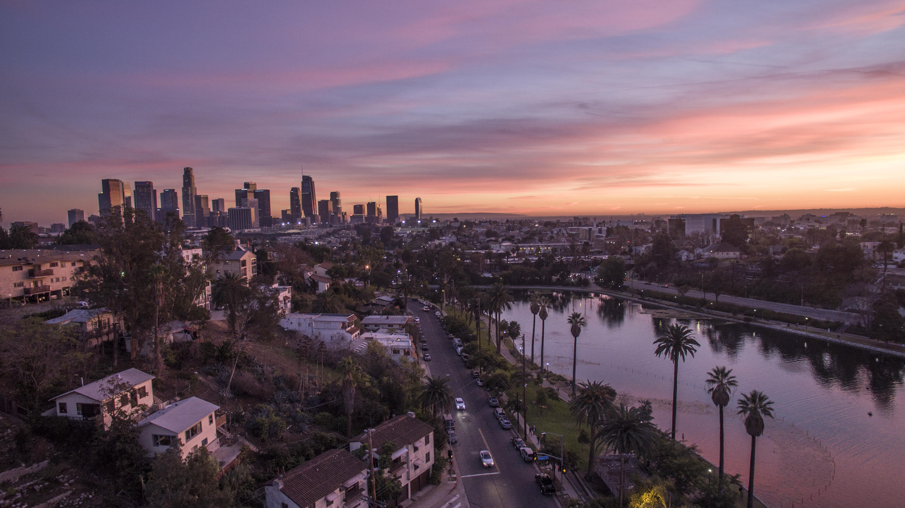

Skip to Main Content
Travel
Monteverde, Costa Rica

Geographical Location: South America
Monteverde, Costa Rica is situated 4,662 feet above sea level. Monteverdes famed cloud forests are the
byproduct of fog (a thick, low-hanging cloud) tangling amongst the leaves and branches of the forest canopy.
Trails and hanging bridges offer a close-up view of the diverse variety of animals and plants living in the
forest.
One of the main tourist locations in Monteverde is the town of Santa Elena, which is not only home to a
variety of restaurants with delicious food, but a serpentarium as well. You can enjoy hiking, ziplining, and
observing the native wildlife while staying in Monteverde. Its a truly beautiful place.
Photo Gallery


Los Angeles, California


Geographical Location: North America
Los Angeles is a sprawling Southern California city and the center of the nations film and television
industry. Near its iconic Hollywood sign, studios such as Paramount Pictures, Universal and Warner Brothers
offer behind-the-scenes tours. On Hollywood Boulevard, TCL Chinese Theatre displays celebrities hand- and
footprints, the Walk of Fame honors thousands of luminaries and vendors sell maps to stars homes
Los Angeles is famous for its idyllic, warm climate. Temperatures are high but pleasant all year round while
rainfall is uncommon and mainly limited to the winter months.
Photo Gallery


Los Angeles, California
Geographical Location: North America
Los Angeles is a sprawling Southern California city and the center of the nations film and television
industry. Near its iconic Hollywood sign, studios such as Paramount Pictures, Universal and Warner Brothers
offer behind-the-scenes tours. On Hollywood Boulevard, TCL Chinese Theatre displays celebrities hand- and
footprints, the Walk of Fame honors thousands of luminaries and vendors sell maps to stars homes
Los Angeles is famous for its idyllic, warm climate. Temperatures are high but pleasant all year round while
rainfall is uncommon and mainly limited to the winter months.
Photo Gallery